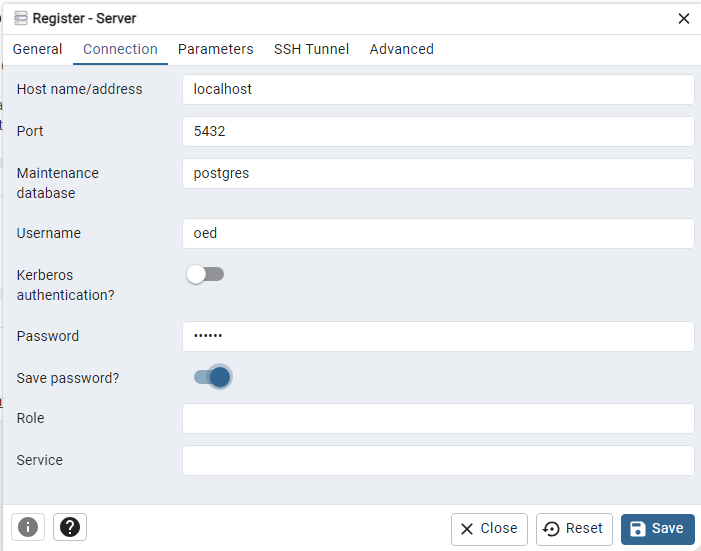

OED Developer Documentation
Developer Details
Documentation overview
Developer documentation
Information
Starting
Codebase Info
Further Details
Version Release
This information is for developers of the OED software so this information is not usually of interest to a general user.
The update to the Redux Toolkit (RTK) is not yet reflected in the documentation. As a result, some information may be out of date.
There are many details and good ideas to use as an OED developer. This page tries to give you some of them. The topics covered are:
- Stopping OED
- Seeing what is happening with OED
- Getting a running OED to recognize code changes
- Accessing the database
- Rapid testing of a one or a few test(s)
- Resetting the Postgres database
- OED environment variables
- OED Scripts
- Migrating OED
- Having multiple versions of OED
- Rebuild after Docker dependency changes
- Running without the database container
- TypeScript Wisdom
- Database timeout on testing
- check permission error (historical)
- Faster OED installation (historical)
Stopping OED
If you are running in a VSC container, then you can simply click the green icon for the Remote Container and select "Close Remote Container". You can also shut the container down manually (by right clicking and choosing "stop") but that is normally only done if something went wrong in shutting down the container in the usual way.
If you are running OED outside of Visual Studio Code then go to the terminal where OED is running, you can type ^-c (control and letter c) together to stop OED. Note it is best to only do this once since a second time causes a force stop. An alternative is to use docker compose down in a second terminal that is in the same directory as where the install is happening. This can also be useful if you are having an issue with your docker container(s) since it cleans them all up. Normally, doing ^-z will put the process into the background. This does not work with a running OED.
Seeing what is happening with OED
Sometimes OED will not act as you expect and you want to know what is going on. There are two normal ways to do this:
- The "nohup.out" file in the main OED directory shows all the logged messages. (If running OED outside Visual Studio Code then it is in the terminal where you started OED.) It is a good idea to be able to see this while you are running a version you are developing so you can tell when something significant happens. The messages can be informational where these are normal and not an indication of a problem. Any server side console.log output will be here.
- Any console.log output on the client side will show up in the web browser console.
- OED has the log file "log.txt" in the main OED directory. All logged messages and errors should be placed in this file. The newest messages are at the end. This file can get large over time so you probably want to focus on lines in the time frame you are interested (they should be timestamped).
- Using the Redux debugging tools in the web browser is also very valuable. It can also help to look at the traces. To do this you must enable it in the code. Go to src/client/app/index.tsx and do what the comments say to enable traces (comment out one line and uncomment two lines below). Please make sure you do not commit this change/include in a pull request. As the comments indicate, it would be nice to automate this process and maybe a developer will do this work and submit a PR.
Getting a running OED to recognize code changes
As a developer, you are often changing the code to see what impact it has on a running version of OED. In general, the system should recognize these changes and update the running version. If you change code under the client/ directory, the output will include a rebuild of the code. When that happens, the output will show this line if it worked. This will be in the terminal where OED is running or in nohup.out if you are working inside VSC.
oed-web-1 | webpack 5.62.0 compiled successfully in 24100 ms
If it fails then you will see one or more failure lines (with failure in red) rather than success. It will also show that it is done rebuilding when you see the line:
oed-web-1 | \
It is not safe to reload the new version in the web browser until the rebuild finishes. You must reload to see the new code. If you change code on the server side, you will not see a rebuild but after a few lines of output you will see:
oed-web-1 | [INFO@2022-04-24T16:31:17.449Z] Listening on port 3000
and then you can see the changes. Since all these changes are on the server, you do not need to reload the web browser.
Normally the output is seen quickly but it can take a little while for webpack to detect the changes. If it ever fails to do this you could shut down OED and restart it but it is generally much easier/faster to go into some file, add a space, remove the space and save the file. This change (that really does nothing) should cause webpack to start the rebuild.
In several cases, developers on Windows have reported not having the code rebuild on save. It turned out that the code was not on the WSL/Linux partition (generally under /home). As described in the developer first steps page, it is important to do this properly.
Accessing the database
There are two ways to access the Postgres database that OED uses. Through the docker container or through pgAdmin
- To access the database from the docker database container (see info on accessing containers), execute the following command:
psql -U oed. You will now be in the Postgres command line for the OED database. It is assumed that you know some SQL and Postgres command line controls if you use this method. One important one is\qwhich will get you back to the terminal by leaving the Postgres command system. - You can also use the pgAdmin utility to access the database. For this method, you need to install pgAdmin on your device. The link to get the latest version is here. Once you have downloaded and installed the correct version for your operating system, you need to enable the port for the connection to pgAdmin. This can be done by going to the docker-compose.yml file in the main OED directory and uncommenting the lines
ports:and-"5432":"5432". Note you must shut down and restart OED for this to take effect. You should now be able to open pgAdmin and access the database on localhost port 5432 by adding a New Server with these properties:- General tab:
- Name: oed (or whatever desired)
- Connection tab:
- Host name/address: localhost
- Post: 5432 (should be default)
- Username: oed
- password: opened (unless changed in docker-compoe.yml)
- Save password?: enable if desired to log in again without password
A screenshot of the setup:

When Save, it will verify connection and then open up connection if all is correct.
- General tab:
Note that no matter how you access the OED database it is the live system so you can make changes that the running application will see (and damage the information too!).
There may be times you want to backup/restore the Postgres data for OED. You can do it by
- Take a database dump (in the database Docker container terminal) with
pg_dump -U oed > dump_$(date +%Y-%m-%d"_"%H_%M_%S.sql) - Restore a database dump by first copying the dump into the container with
docker cp /path/to/dump.sql container_name:/dump.sqland then restoring it into the database withpsql -U oed -f /dump.sql. The /path/to/dump.sql is the file with date & time created in the dump step. TODO Note someone should test/see if you really need to put it into the container first and this has not been tested since we went to working in the database container.
Rapid testing of a one or a few test(s)
When you make changes to OED or develop new tests, it may be the case that only one or a few tests fail when you run testing (or you want to focus on one test at a time that fails). Running all the tests is much slower than running a single test file. Thus, to run a single test, in the web/vsc docker container (see info on accessing container) do:
npm run testsome <first test> [<second test>]
where you replace < xxxx test> with the path to the test file you want to run and [ ] indicates this is optional and you can repeat as many times as you want for more tests.
For example, to run the web groups test, you would use:
npm run testsome src/server/test/web/groups.js
and to run the web groups test and the db baselineTests use:
npm run testsome src/server/test/web/groups.js src/server/test/db/baselineTests.js
If you are using VSC you can easily get the path to any open test file. Right click on the file name in the tab for that editor window and choose "Copy Relative Path". This can then be pasted into the needed command.
Resetting the Postgres database
During the initial install of OED, Postgres detects that you have not run before for this install and initializes the database system. It keeps the information in the postgres-data/ directory in the main OED directory. If you or a pull changes the database configuration, it will not automatically be changed on the next OED install. When we change versions of OED we use a migration system to upgrade the database but this may not be available during the development cycle. Given this, it is often easiest to force Postgres to reinitialize the database. Note that doing this will wipe out any data (meter, readings, preferences, etc.) that you have for this instance of OED. If you wish to force Postgres to reinitialize then do the following:
- Remove the postgres-data/ directory from the main OED directory. While you can move it to keep a copy, some OSes will still use the moved directory as if it exists in the main OED directory (at least until a reboot). Thus, it is probably best to delete the directory. Also note that OED should not be running when you do this as it will cause all kinds of problems when it does not find this directory. OED will automatically recreate the next time you bring it up.
- To delete this on Linux, you can do
rm -rf postgres-datain the main OED directory. Note you may need to be root to remove this directory. If this is the case, usesudo rm -rf postgres-datawhere you will be prompted for the root password. - It is sometimes tricky to know/login as root on a Windows WSL system. In this case, open the PowerShell, and enter the command
wsl -u rootthat will put you in your WSL/Linus terminal as root. You can then directly delete the postgres-data/ directory. You should be very careful using this terminal as you can do damage as the root user. - After you delete the postgres-data/ directory on Windows WSL, you will need to delete both OED containers (can do via the Docker Desktop or Docker extension in VSC). Doing a
docker compose downin a terminal in the main OED directory will also accomplish this. Otherwise, you are likely to get the following error when you restart OED:Error response from daemon: failed to create shim task: OCI runtime create failed: runc create failed: unable to start container process: error during container init: error mounting "/run/desktop/mnt/host/wsl/docker-desktop-bind-mounts/Ubuntu/c5c261024a2161c37bee3afcd0931bd36812e943519b816556c0bfbd60899ef2" to rootfs at "/var/lib/postgresql/data/pgdata": mount /run/desktop/mnt/host/wsl/docker-desktop-bind-mounts/Ubuntu/c5c261024a2161c37bee3afcd0931bd36812e943519b816556c0bfbd60899ef2:/var/lib/postgresql/data/pgdata (via /proc/self/fd/14), flags: 0x5000: no such file or directory: unknown
- To delete this on Linux, you can do
- Do an install of OED by reopening it in the VSC container or doing it outside of VSC. Remember if package changes were made then it will reinstall the node_modules. Note the install will take longer do to the extra initializations.
- Sometimes the first attempt at installation will fail when you do this. Try it one or two times more to see if it will work. (We are trying to determine why this happens.) If not, replace the postgres-data/ directory with the one removed and this should get you running but will not give you a new version of the database. If you have this issue then contact us for help (see link at bottom of page).
OED runs in the containerized Docker environment. This means the software and files created are within this container and disappear when you stop running OED (shut the container down). The one exception to this rule is the information stored in the PostgreSQL database. Because this information needs to exist between OED runs to keep the database initialization and OED data, the information is kept within your OED installation in the postgres-data/ directory on your machine's file system. This is why removing the postgres-data/ directory resets the database within the Docker container.
OED environment variables
If you want to know about the environment variables that control OED then see the environment page.
OED Scripts
OED has a number of scripts that are run via commands in the package.json file. A complete listing with descriptions is on the NPM script page.
Migrating OED
The script src/scripts/updateOED.sh should update all dependencies and migrate the OED database if changes are needed. This may not work (see ideas above) if migrations are not yet available or this has been done before for the same version of OED.
Having multiple versions of OED
Most developers keep one clone of the OED software. They switch between branches as needed. However, if you are working on multiple versions of OED, esp. where the node modules are changing or the database configuration changes, then you can avoid having to do a full install (see above) by cloning separate copies of OED. When you install it will do the clone you are currently located in (the current directory in your terminal). The database information and all code is kept separate for each installation as part of the Docker containerization. Note you cannot run multiple version of OED simultaneously unless you change the ports it uses (this is not common).
Rebuild after Docker dependency changes
If a "From" in a Dockerfile is changed, then the version of that software needs to be updated. Docker normally uses its cached version so the update will not happen. To force the update, do:
- Inside VSC run the command
rebuild container. - Outside VSC in a terminal do
docker compose up --buildwhere you can add other arguments (such as keeping the node modules). This is unusual in that it is done in a terminal on your own machine in the main OED directory and not in an OED Docker container (because you are resetting the Docker containers).
This should make Docker use what is specified in the Dockerfile. If there are no changes then it will not download a new version of the needed software but it will be a little slower for the checks and potentially creating the container. OED tries to announce to the Docker channel for developers whenever a change is make to a Dockerfile that would require this action. This is not commonly done.
Running without the database container
On rare occasions, you may get a database failure during the startup of the database container during the install/startup of OED. (This is not the transient issues noted during the install where the script reports it is continuing). Generally OED will tell you an issue happened in the console output and Docker indicates the database container is not running. In general, the underlying issue should be addressed so you have a correct OED installation. (This happened, for example, during Windows WSL installs until an file permission issue was resolved.) In rare circumstances, you still want to run the OED web container knowing that any operations that touch the database will fail. There is a parameter to the install script that allows this and can be done with: install_args="--continue_on_db_error" docker compose up
or the full install script (not using docker compose up) of docker compose run --service-ports --rm web npm run src/scripts/installOED.sh --continue_on_db_error
OED will still try to install the DB, fail and then continue to try to install the web container. You should see the regular messages in the console indicating the web container is running as expected. If you are working inside VSC, you will need to edit the src/scripts/installOED.sh script to add the --continue_on_db_error parameter.
TypeScript Wisdom
TypeScript is great, but sometimes it requires some rather strange incantations, especially when working with external libraries. We cannot provide information on everything you need to know but here is one of interest:
Regarding InjectedIntlProps from react-intl
When using react-intl's higher order component functionality, some incantations are required. When defining a component, it's necessary to express that the component's props are actually (your props) ∪ (internationalization injector). This can be done via the & operator, as follows:
interfaceSomeProps {
prop1: number;
}
interfaceSomeState {
state1: number;
}
class SomeComponent extends React.Component<SomeProps & InjectedIntlProps, SomeState> {
constructor(props: SomeProps: & InjectedIntlProps) {
super(props);
// ...
}
// ...
}
export default injectIntl<SomeProps>(SomeComponent);
If the union type is used often, it might be cleaner to create a type alias:
type SomePropsWithIntl = SomeProps & InjectedIntlProps;
Database timeout on testing
Sometimes when you run the OED tests for the first time in a while, you get an error about the database timing out. The message is normally something similar to "Error: Timeout of 15000ms exceeded. For async tests and hooks, ensure "done()" is called; if returning a Promise, ensure it resolves." If this happens, rerun the test command. It normally works the next time (or within a total or three tries). We are working to change our testing and installation so Postgres is ready before operations continue so this problem will go away. The current fix is to allow a test to take up toe 15,000 ms or 15 seconds to complete so Postgres has time to start up and that is why you see "15000ms" in the error message. We have also set the timeout to be longer in a few tests where the issue was happening. If the problem persists, you can go into package.json and change the 15000 to be a larger value (such as 30000). This means mocha will not terminate a test until 30 seconds have passed. The only known negative of doing this is that a test that will not complete due to an error will take longer for mocha to terminate. However, this is uncommon in OED tests so the change should be fine.
check permission error (historical)
A few developers have reported that when they run docker compose run --rm web npm run check they get an error similar to "Error: EACCES: permission denied, scandir '/root/.npm/_logs". We do not believe this will happen any longer now that developers are asked to work within the Docker container. For the historical record the only know fix was to run outside of docker by doing npm run check. It is believed that this issue is due to doing installs as root and then not being root when inside docker but this is not certain. However, at least one developer found that changing the file permissions did not fix the issue. If anyone has this issue or finds a solution then please let us know.
Faster OED installation (historical)
The installation process was updated in late February 2022 so the node modules are not updated unless needed. This means the node modules will only be updated if the package.json and/or package-lock.json file is update whether by directed edit or from pulling updating versions. As a result, the old method of install_args="--keep_node_modules" docker compose up should not be needed if you are running current versions of OED software. The keep_node_modules parameter was left for backward compatibility and in the unlikely case where a developer wishes to use it. As expected, the steps and output is different when there is no node module installation as seen in skipping NPM install output.